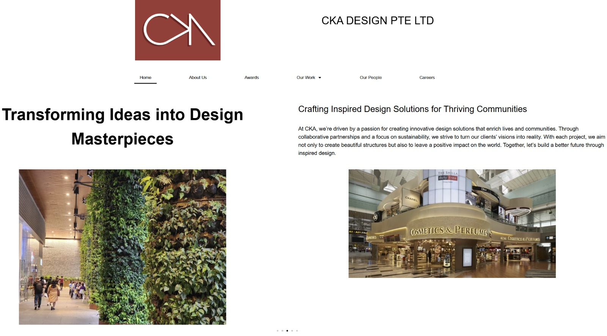
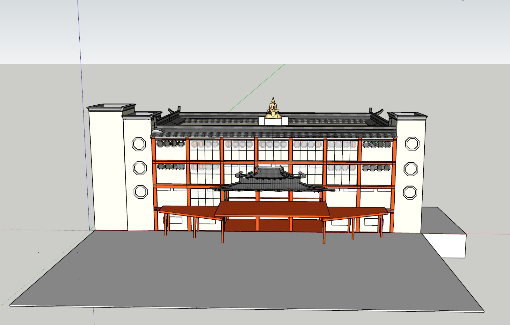
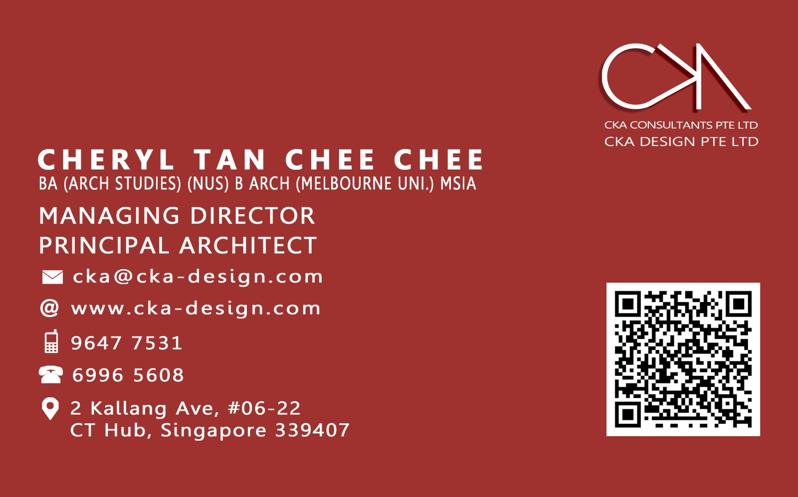

2 Month Internship
WordPress Website Support
Helped update and improve the company website in WordPress so it looked cleaner, was easier
to navigate, and could be managed more comfortably by non-technical staff.

2 Month Internship
3D Modelling & Draft Support
Supported 3D modelling, visual preparation, architectural competition draft writing, and
meeting observations.

2 Week Internship
Name Card & Contact Website Support
Helped prepare staff name card materials and supported personalised contact website work for
clearer branding and easier sharing of contact details.